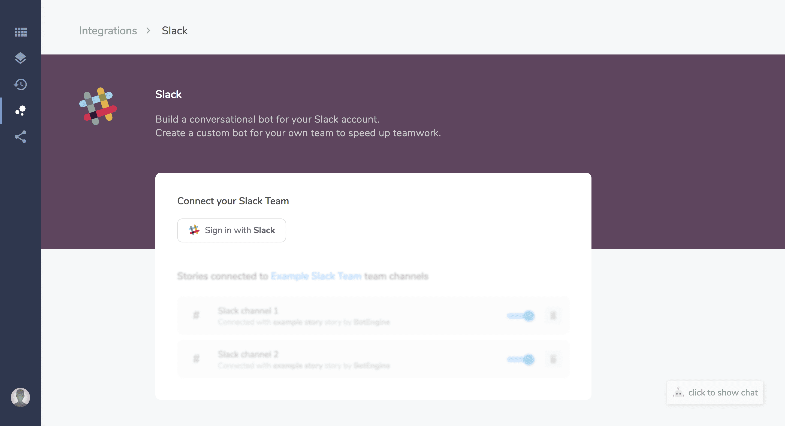
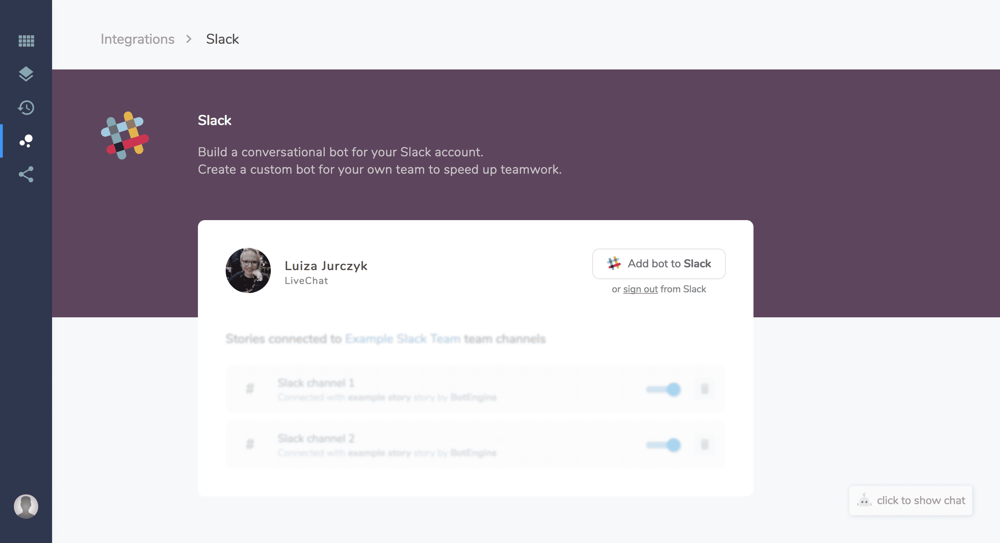
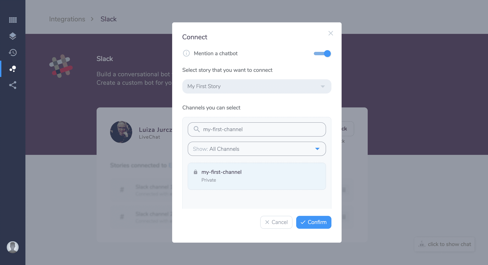
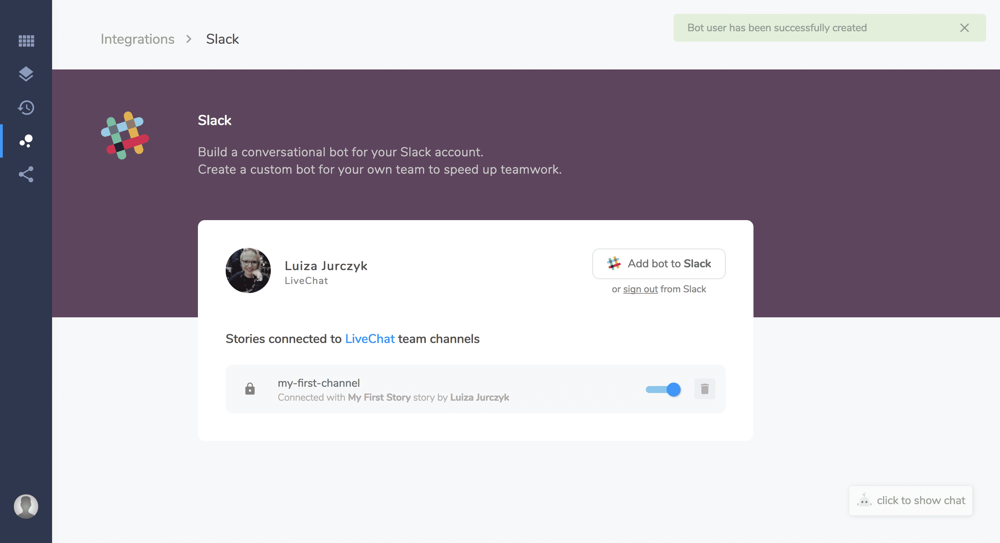

Last update:
Slack is a teamwork app that can be used to coordinate a project, organize your office or plan a meeting. BotEngine can help you with that and automate repeatable tasks.
Key features
- Focus on what matters. Automate your daily tasks and let the bot do the work for you.
- Start and end your chat when you want. Call
@BotEngineto begin a conversation. SelectEnd chatin bot responses to finish the dialogue when it is complete. Your bot won’t be active until you mention it again. - Keep your channels tidy and legible. Your bot always replies in a thread.
- Slack is a popular instant messaging app for better teamwork.
Slack doesn't support the following features: typing indicator, delay, and welcome interaction.
How to integrate your chat bot with Slack
- First, create the Story that you’d like to connect to your Slack.
- Go to the Integrations and select Slack. 
- Click Sign in with Slack button.
- Login to the workspace that that your bot will integrate with. 
- In the settings window choose the following:

- Mention in chat - when this option is ON, the bot is only active when its mentioned
@BotEngine. Unchecked option means that the bot answers all the questions in the channel. - Select the story that you want to connect with - you can many integrations with Slack but one integration can connect only one story.
- Channels you can select - choose a channel for your bot.
- Mention in chat - when this option is ON, the bot is only active when its mentioned
- Click on the Confirm button to save your changes. Now your bot is active.
You can connect many Stories to your Slack. Remember you can integrate multiple stories with one channel. To achieve that, please manually add each story to the channel.
How to disable/delete active integrations
- Go to the integrations and select Slack
- Now you can see all your active integrations with Slack. 
- Click on the switch button next to the integration to turn it off. You can also delete it completely by clicking on the remove button.
Bot Responses
Some bot responses may not work with this integration. Check the compatibility table here.
Parameters you can use with Slack integration
default_avatardefault_namedefault_timezonedefault_real_namedefault_email